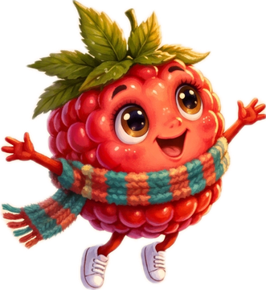
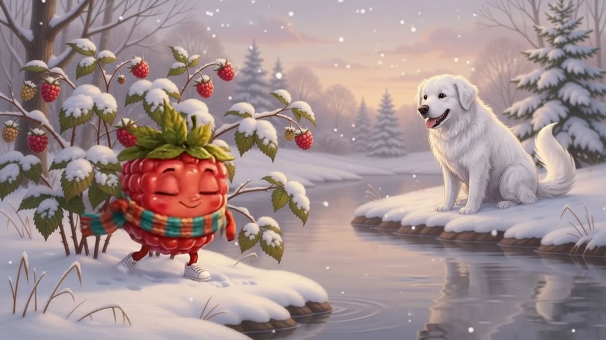

Razzle's River Crossing
Level 1 · Score 0 · Tries 5
Razzle

Razzle's River Crossing
The sacred raspberry bush is on the far bank of the Blackstone, and Razzle needs to get there. Logs and ice floes drift across the river. Hop from one to the next. Never the water!
Difficulty
Start at level
How to play
- Hop with the arrow keys, the big Hop buttons, or click or tap next to Razzle.
- A log or ice floe carries Razzle along. If it drifts out of the river, hop off first.
- Bring Razzle into each of the 3 gaps in the bush to finish a level. There are 5 levels.
- Floating raspberries are bonus points. Green rings show where a hop is safe.
Razzle's lines are written for the game, not from the show. Her voice is AI-generated from her podcast voice.

Good game!
Settings
Look
Text size
Difficulty
Hop helper (green rings where a hop is safe)
Music
Sounds
Razzle's voice
Sound captions